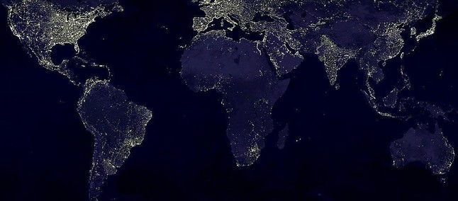

Geografia
-
Conceitos Básicos
A Geografia é a ciência que estuda elementos físicos, biológicos e humanos, e suas relações com o planeta Terra. Tem como principal objetivo compreender a relação do homem com o meio ambiente, as condições climáticas e as características do espaço geográfico.
-
Biomas Brasileiros
Em nosso país podemos encontrar seis tipos de biomas: Amazônia, Mata Atlântica, Cerrado, Caatinga, Pampa e Pantanal.
-
Globalização e Indústria
Trata-se de um fenômeno impulsionado pela tecnologia, que visa o movimento de ideias, pessoas e bens em todo o planeta. Dessa maneira, é possível reduzir disparidades no processo produtivo e de consumo, principalmente, considerando questões culturais, políticas, econômicas e sociais.
-
Revolução Insdustrial
A Revolução Industrial foi o período de grande desenvolvimento tecnológico que teve início na Inglaterra a partir da segunda metade do século XVIII e que se espalhou pelo mundo, causando grandes transformações. Ela garantiu o surgimento da indústria e consolidou o processo de formação do capitalismo.